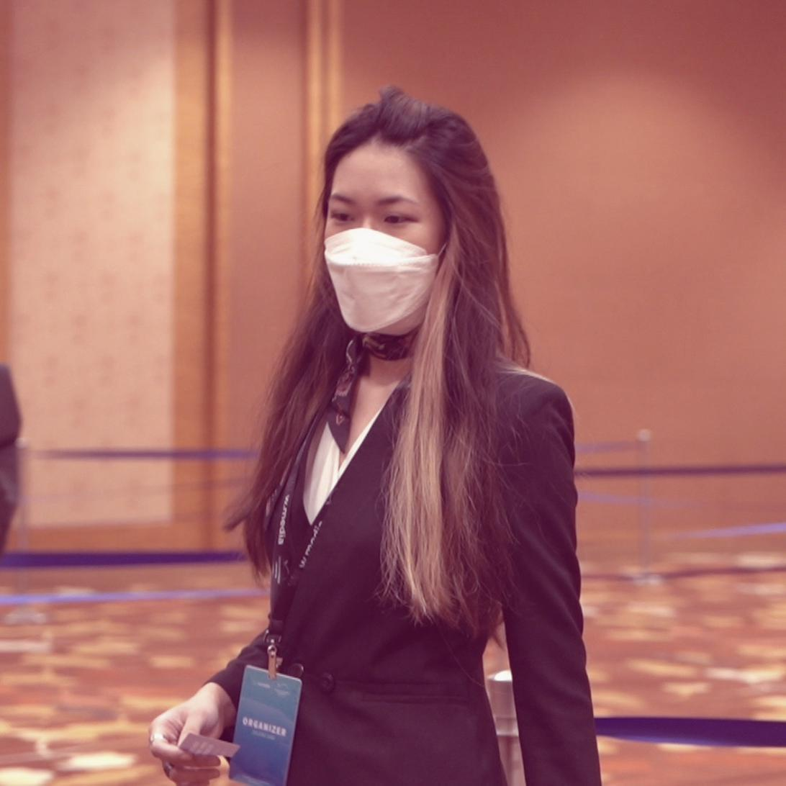
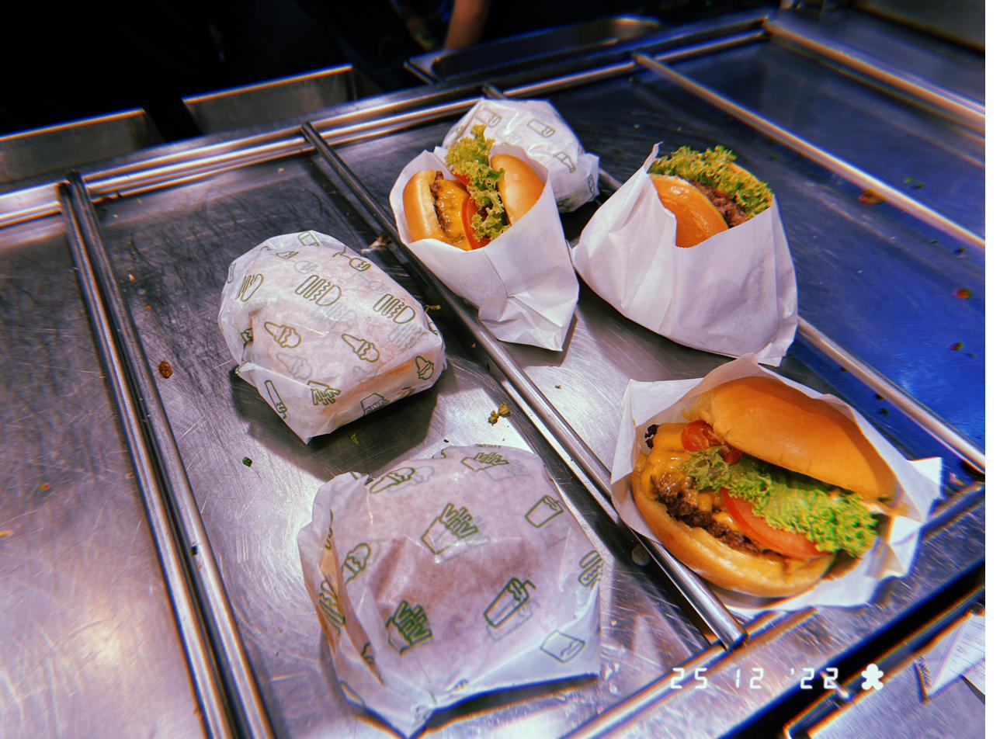
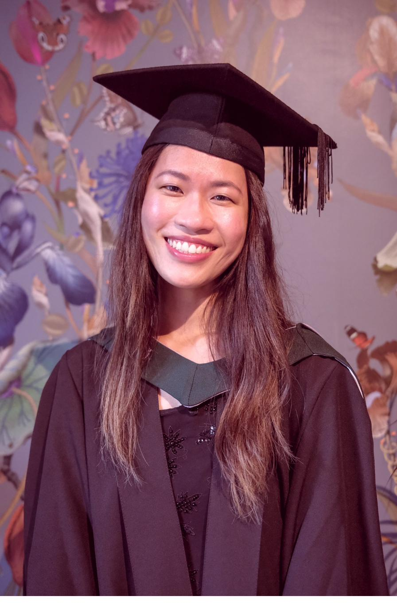
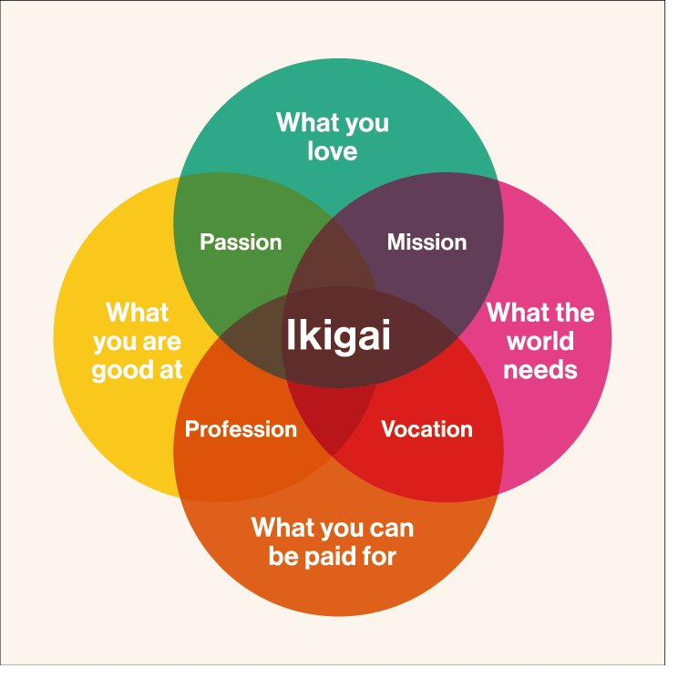

Data science is a subject that found me, rather than the other way around. I was asking so many questions in class, people were smirking. I did not let that extinguish my enthusiasm. It was evident I enjoyed what I was learning, and I have not stopped since.
My first real exposure to data was during my Diploma in Business Information Systems at Republic Polytechnic in Singapore. It was my introduction to coding, databases, SQL, business intelligence, and analytics. Tears were cried. All-nighters were pulled. But there was a satisfaction in arriving at the point of comprehension after much difficulty and solving something independently that I could not ignore.
In 2018, my managing director at the time advised me against continuing down the path of Business Information Systems with a Bachelor's degree, and convinced me to pivot to Communication. She had a point, but it only satisfied one area of Ikigai: what I am good at. It felt like a confusing detour, but the Statistics for Social Sciences module quelled my growing hunger. Graphs. Hypothesis testing. Correlation and prediction. Cognitively, it was laborious. I was often the last one in the lab while the others took off, but I was driven by that eventual sense of achievement. It is much like the endorphin hit after a tough workout, strenuous in the moment, but the sense of reward in the end is well worth the effort. That fulfils my second element of Ikigai.
After graduating, I continued pursuing tech in any capacity I could. I joined W.Media, a data centre, cloud and cyber security events and publishing company, a business at the mercy of the pandemic.

Armed with masks, the show pressed on. I got exposure to tech founders, award winners, and sponsoring global companies. As exciting as it all was, my role within the company was that of a Marketing Executive. I knew I had to continue my search.
For over nine years, I worked in service alongside other roles, saving every pound I could toward postgraduate education. It was not glamorous. Some days I smelled of bacon and sweat. I did not stop on account of Christmas Day. But it was deliberate.

In 2023, I enrolled in the MSc Data Science in Business programme at Regent's University London. From the very first weeks, it was clear this was the right place. I graduated in 2024 with distinction, with SAS Academy accreditation, an invitation to contribute to an academic textbook on data science applications, and so many more opportunities that deserve their dedicated essay.
The subject did not feel like study.
It felt like belonging.

I am driven by the principles of Ikigai, seeking a career that balances passion, mission, vocation, and profession.

Precision medicine is a type of treatment designed for the individual, not the average patient. Motivated by my great-aunt's experience with MS, I am committed to producing meaningful work that transforms the one-size-fits-all approach into the precise clinical therapies that patients like her deserve. The idea that data science could help get the right therapy to the right person at the right time is the most compelling application of this field I can imagine.
Data science for precision therapy is a high-level goal indeed, but if I shoot for the moon, I might land amongst the stars. That is the long game I am playing.
A non-traditional path teaches you things a direct one might not. Slogging at minimum wage jobs for nearly a decade to save for education makes you value the destination far more than someone who arrived easily. It builds resourcefulness, resilience, and a genuine empathy for people who are working hard in systems that were not built for them.
I have particular empathy for women and minorities in this male-dominated industry. It shapes the kind of colleague I want to be: one who welcomes knowledge-sharing, supports others, and does not take any opportunity for granted.